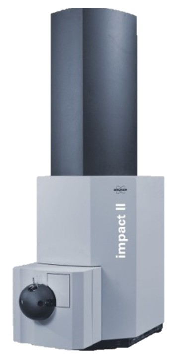

Next-Generation Mass Spectrometry
Improving MS acquisition, sensitivity, throughput, and quantitative confidence for omics-scale small-molecule analysis.
High-resolution mass spectrometry · Metabolomics · Exposomics
The Huan Lab develops next-generation analytical chemistry and computational biology to detect, quantify, and interpret thousands of metabolites, lipids, and environmental chemicals from complex biological and environmental systems.
Research engine
Our research connects analytical chemistry and computational biology to push metabolomics beyond measurement and toward confident molecular interpretation.
View researchImproving MS acquisition, sensitivity, throughput, and quantitative confidence for omics-scale small-molecule analysis.
Developing computational tools to extract reliable signals from noisy, high-dimensional LC-MS datasets.
Using spectral evidence, chemical knowledge, and machine learning to understand chemical fragmentation and prioritize unknown metabolites and environmental chemicals.
Applying metabolomics and exposomics to questions in disease biology, environmental health, microbiome research, and chemical exposure.
We build the complete metabolomics workflow: from sample extraction and MS data acquisition to data processing and biological validation.
Robust extraction workflows designed to preserve chemical coverage across metabolites, lipids, and exposure-related compounds.
Instrument methods and quality-control strategies for reproducible, high-throughput chemical measurement.
Algorithms for feature detection, normalization, annotation, and quantitative reliability in large-scale LC-MS studies.
Applications in health, disease, environmental exposure, and systems biology through interdisciplinary partnerships.
Meet the teamThe Huan Lab's state-of-the-art MS platforms enable targeted and untargeted metabolomics, lipidomics, exposomics, and quantitative small-molecule analysis to measure thousands of high-quality metabolites across complex biological and environmental samples.

High-throughput trapped ion mobility QTOF for deep MS molecular profiling.
Supports CCS-enabled characterization and high dynamic range acquisition for large-scale metabolomics, lipidomics, and related omics workflows.

Plate-based acoustic ejection MS for rapid high-throughput screening.
Combines contactless sample introduction with high-resolution ZenoTOF readouts for scalable qualitative and quantitative small-molecule workflows.

Ultra-high-resolution accurate-mass QTOF for untargeted discovery.
Designed for trace analysis in complex matrices, metabolite identification, MS/MS characterization, and method development across LC-MS workflows.


Triple-quadrupole and QTRAP systems for targeted LC-MS/MS quantitation.
Used for sensitive measurement, confirmation, and validation of metabolites, lipids, biomarkers, and exposure-related compounds in complex samples.
Research output
Our publications span analytical chemistry, machine learning, exposomics, lipidomics, environmental health, and collaborative biological discovery.
All publicationsTeam science
Our group brings together analytical chemists, computational scientists, environmental scientists, biologists, and trainees who are building the next generation of metabolomics technology.
We welcome outstanding graduate students, postdoctoral fellows, and visiting scholars interested in analytical mass spectrometry, metabolomics, exposomics, bioinformatics, artificial intelligence, and systems biology.